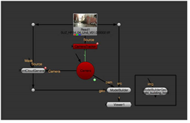

如有必要，可以将 ModelBuilder 模型上的形状导出到单独的几何节点。这允许您将场景的一部分与其余部分分开操作。可以使用几何节点，方式与中任何其他几何节点相同 Nuke .
| 1。 | 在 ModelBuilder 属性中，选择要导出到单独几何节点的任何形状。 |
| 2. | 确保下的烘焙菜单 出口 设置为 选定几何 并单击 烘焙 . |
ModelBuilder 为场景中的选定项目创建几何节点。

提示: Bake 菜单中的选项是用 Python 实现的，您也可以使用 Python 将自己的条目添加到菜单中。要了解内置选项是如何实现的，请查看 Modelbuilder.py 模块中的 Nukescripts 安装文件夹 (有关此文件位置的详细信息，请参阅 查看更多示例 )。然后，要创建自己的菜单选项，请编辑 Modelbuilder.py 文件，并使用 populateBakeMenu 函数添加条目，上面写着 “# 如果需要，在这里添加您自己的条目”。
|
|